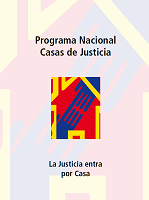

CASAS DE JUSTICIA
Las Casas de Justicia son espacios comunitarios que brindan atención integral, orientación jurídica y acompañamiento a las víctimas de violencia, facilitando el acceso a la justicia de manera gratuita y cercana.
Casa de Justicia Los Mártires
 Carrera 21 # 14 - 75
Carrera 21 # 14 - 75
 (601) 3779595
(601) 3779595
Horario: L-V 7:30 a.m. - 4:00 p.m.
Casa de Justicia Chapinero
 Calle 63 # 9 - 76
Calle 63 # 9 - 76
 (601) 3779595
(601) 3779595
Horario: L-V 7:30 a.m. - 4:00 p.m.
Casa de Justicia Kennedy
 Av. Boyacá # 36-57 Sur
Av. Boyacá # 36-57 Sur
Ruta integral para mujeres víctimas
Casa de Justicia Bosa Campo Verde
 Línea Fiscalía 018000 916111
Línea Fiscalía 018000 916111
Atención presencial y virtual